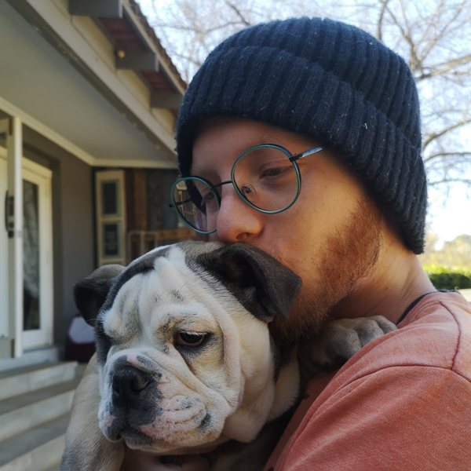

Software developer
Kheagen Haskins

I am a self-taught software developer. A psychology degree led me into teaching, and teaching coding led me into software development. Since 2025 I have been the only developer at IT Anywhere.
- South Africa
- slinky.haskins@gmail.com
- GitHub
Experience
-
IT Anywhere (Pty) Ltd
IT Anywhere is a managed IT services provider. I built its data platform, Xhuma, which gives every client a monthly report on the health and security of their IT. The name is the Zulu word for ‘to connect’.
One half of Xhuma syncs data from eight sources into one database. The other half reads that data back out and turns it into configurable reports.
- 8 data sources Ticketing, monitoring, backups, security training
- 1 database SQL Server, refreshed every 4 hours
- Client reports PDF and Excel, every month
Xhuma runs in production, and I made all 20 of its recorded design decisions. I designed each layer myself:
- Database. I designed the schema and administer the SQL Server database.
- Integrations. I built the API layers that read ticketing and monitoring over REST, security training over GraphQL, backups over JSON-RPC and the data warehouse over JDBC.
- Domain model. I designed the business objects, which stay stable when the database changes.
- Reports. I design the PDF reports in HTML and CSS.
- Web. I built the web page that configures each report.
Alongside Xhuma, I am the system administrator for the company's service desk system. I configure its ticket types and workflows, and take on tickets that need a developer, such as website migrations and PHP debugging. During one migration I found a hacked website and cleaned it up.
-
Reddford House Northcliff
I taught coding and robotics to primary school children, using LEGO Mindstorms EV3 robots and Swift Playgrounds. When Covid moved lessons online, I taught myself web development and taught HTML and CSS to Grade 4s.
From 2021 I also taught IEB Information Technology to Grades 10 to 12. I taught Java, wrote a textbook for the course, and helped matric students build their final-year projects.
-
Dynamic Marketing
I sold TomTom GPS devices to shoppers in Makro, a large retail chain, approaching each person cold. The job built my confidence in talking to strangers and persuading them.
Skills
- Java
-
Xhuma is written in framework-free Java 25, split into modules that expose only their public API.
- Data
-
I wrote the code that generates Xhuma's SQL and protects it from SQL injection. The data sync loads only new and changed rows, and recovers when a database connection drops.
- APIs
-
Each vendor connection keeps to that vendor's rate limits and retries failed calls with growing delays. Login tokens refresh safely while many calls run at once.
- Reports and apps
-
Xhuma produces Excel workbooks and PDF reports with charts. Its apps run on Windows as standalone programs that bundle their own Java runtime.
- Tooling
-
Alongside Xhuma I wrote six command-line tools in Rust and a build script in Python:
xhuma-dbrebuilds a database from the schema files and fills its date and time tables. The Java integration tests call it before they run, because it starts much faster than a JVM.xhuma-db-resetdoes the same with the schema built into the program, so it runs on a machine that has no copy of the code.dockwakebrings Docker Desktop back when Windows sleep leaves it stuck starting up, then restarts every container.versionerupdates the version tags and last-modified dates in the Javadoc.sloccounts lines of code per language.xhuma-iconturns an SVG into a Windows app icon at several sizes.build.pybuilds every module in dependency order, clearing out files Windows keeps locked before it starts.
Every Maven module takes its dependency versions from one shared bill of materials (BOM). A module's build fails when its test coverage drops below a set minimum, and Checkstyle, PMD and Spotless check the code's style. SQL Server runs in Docker for development and testing.
Projects
-
HackMaster
HackMaster recreates the terminal hacking puzzle from the Fallout 3 and 4 video games. The player picks a password from a screen of words, and each wrong guess reports how many letters are in the right place.
Its screens update themselves whenever the game state changes, and it comes with a Windows installer.
Education
-
Self-taught programming
I learnt to program through my teaching, my development work and my own projects. I completed most of Codecademy's Java courses, studied for Oracle's Java OCP exam, and relearnt maths on Brilliant.
My side projects moved from procedural noise to a small physics engine, and from there to entity component system (ECS) architecture.
-
Bachelor's degree
I majored in Psychology and Communication Science at Varsity College Sandton (now Emeris).
-
Matric
I earned my National Senior Certificate at Maragon Private Schools (now Crawford Ruimsig).
Hobbies
-
Chess
-
Maths Working through courses on Brilliant
-
PlayStation
-
Reading Currently Introduction to the Theory of Computation by Michael Sipser